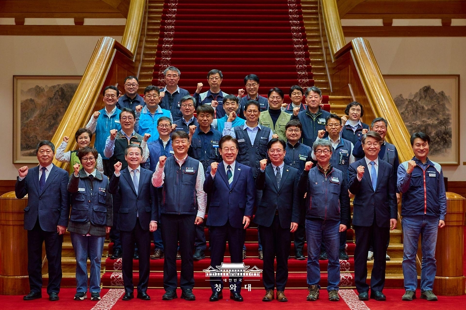
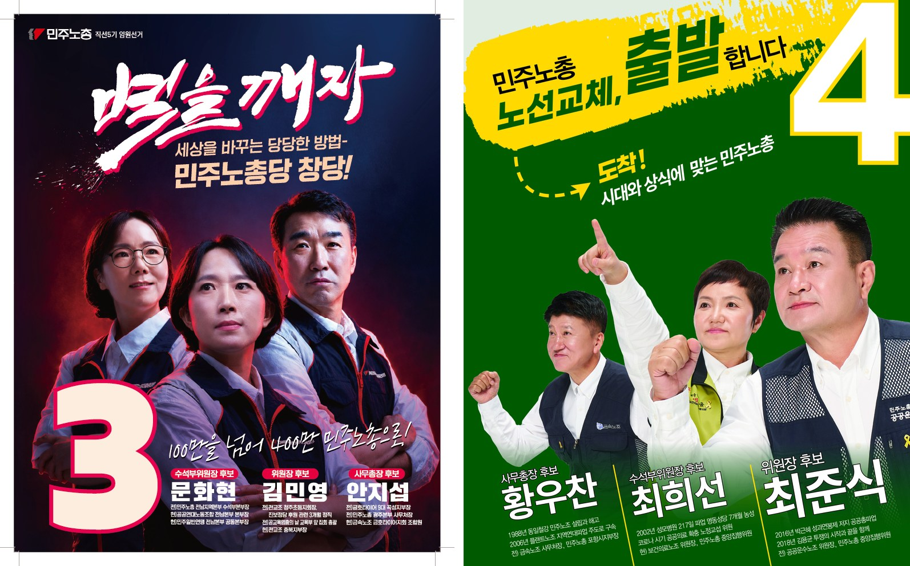

민주노총 결선, '진보당 주류'에 반기… 이재명 정부와 각 세우기
3번 김민영·4번 최준식, 1번 엄길용 지지
커피쿠폰 두 지부 투표 일부 무효
양경수 "투쟁은 기본, 사회적 교섭으로"
AI경제저널=김갑봉 기자 | 민주노총 위원장 선거 1차에서 떨어진 3번 김민영·4번 최준식 후보조가 결선에서 1번 엄길용 후보조를 지지한다고 밝혔다. 김 후보는 지난 27일, 최 후보는 28일 페이스북에 입장문을 올렸다.
두 입장문은 기호 2번 양경수 후보의 3선에 반대한다는 데서 같다. 김 후보 쪽은 이재명 대통령과 정부를 대하는 태도를 문제 삼았다. 최 후보 쪽은 "특정정파의 이해와 요구만을 반영하는" 집행부를 비판했다.
양 후보가 속한 민주노동자 전국회의(전국회의)는 민주노총 안 최대 정파다. 노동당 노동위원회 보고서는 진보당과 전국회의 안에 경기동부·부울경·광주전남 연합이 "공존했다"고 적었다.
엄 후보는 두 후보조의 지지에 "더 무겁게 뛰겠습니다"라고 답했다. 결선은 오는 12월 6일부터 10일까지 치른다.

3번 "이재명을 지키지 말고 노동자를"

김 후보 쪽 입장문은 반대 까닭 세 가지를 들었다. 먼저 양 후보가 민주당 이재명 대선후보 지지를 시도해 민주노총 정체성을 "심각하게 훼손"했다고 적었다.
이어 이재명 정부에 "기대와 환상"을 가져 노동개악 등 투쟁을 방기했다고 썼다. 위원장 직권으로 경제사회노동위원회(경사노위) 복귀를 밀다 "초광역특구법 뒤통수를 맞고, 조직을 분열시켰다"고도 했다.
입장문은 "민주노총은 이재명을 지키지 말고 노동자를 지켜야 한다"는 문장으로 엄 후보 지지를 맺었다.
김 후보는 전국교직원노동조합(전교조) 충북지부장이다. 그가 속한 사람과세상은 지난해 6월 진보당 안 광주전남연합을 중심으로 세워졌다고 노동당 보고서는 적었다. 사람과세상도 진보당을 지지한다.
민주노총 정치활동과 정파는 학계도 다뤘다. 김영수(2007)는 『한국정치연구』 논문에서 정파로 갈리고 이중으로 나뉜 민주노총 정치활동 구조를 짚었다.
4번 "정파가 아닌 산별노조와 지역본부"
최 후보 쪽 입장문은 양경수 집행부가 "민주노조의 기본과 원칙을 무너뜨리고 특정정파의 이해와 요구만을 반영"한다고 적었다. 그러면서 3선을 강력히 반대한다고 했다.
입장문은 "정파가 아닌 산별노조와 지역본부가 중심이 되어" 민주노총을 재건하자며 1번 지지를 호소했다. 최준식·최희선·황우찬 세 후보가 이름을 올렸다.
최 후보는 공공운수노조 위원장을 지냈다. 최 후보조 진영인 노동자가 여는 평등의길은 2025년 대선 때 권영국 후보 지지를 선언했다.
엄 후보는 28일 페이스북에 "3선 말고 혁신! 패권 말고 통합!"이라고 적었다. 3·4번 후보조 "동지들의 염원까지 함께 담겠습니다"라고도 했다.
1번 "노정교섭", 4번 "사회적 교섭"
민주노총 중앙선거관리위원회(중앙선관위)는 후보 정책 요약을 냈다. 엄 후보조는 여기에 "힘 있는 노정교섭!"을 첫 공약으로 올렸다. "실패로 드러난 '사회적 대화' 대신에" 투쟁으로 쟁취하겠다고 했다.
같은 요약에는 메가특구법(초광역특구법) 폐기와 "'민주당 위탁정치' 탈피"도 들어 있다.
최 후보조는 공보물 정책자료집에서 사회적 교섭을 내걸었다. "노정교섭-사회적 교섭, 결판을 내겠습니다"라고 적었다. "정당에 끌려가지 않는 민주노총이 필요합니다"라고도 했다.
사회적 교섭을 공약한 4번이 결선에서는 사회적 대화를 실패로 본 1번을 지지했다. 1번 공약에는 "민주당 위탁정치" 탈피가, 4번 공약에는 "정당에 끌려가지 않는" 민주노총이 있다. 3번 입장문은 "이재명을 지키지 말고"를 앞세웠다.
양경수 "투쟁은 기본입니다"
양 후보는 지난 4월 10일 청와대에서 이재명 대통령이 연 민주노총 초청 간담회에 민주노총 위원장으로 참석했다.
결선 진출이 정해진 26일에는 페이스북에 입장을 올렸다. 1차 득표를 "사회적 교섭에 대한 현장의 절박한 요구"로 새기겠다고 했다. 3·4번 후보조에는 "깊은 위로와 연대의 인사"를 전했다.
28일 오전에는 "투쟁은 기본입니다"라고 적었다. 코로나와 노조법 개정, 윤석열 계엄 때 민주노총이 물러서지 않았다고 했다. 그 위상을 성과로 바꾸려면 사회적 교섭이 필요하다고 덧붙였다.
교섭 의제로는 주4일제와 정년연장, 비정규직 정규직 전환, 5인 미만 사업장 근로기준법 적용을 꼽았다. 지난 대의원대회 무산을 두고는 "무엇이 두려워 사회적 교섭을 회피합니까"라고 물었다.
같은 날 오후 양 후보 선거운동본부는 성명 「소득공백 해소없는 정년연장안 이재명 정권 강력 규탄한다」를 냈다. 성명은 민주당의 재고용·단계적 정년연장안을 "미봉책"이라 했다. 국민연금 수급연령과 연계한 법정 정년연장도 요구했다.
중앙선관위, 11개 후보조 경고
중앙선관위는 지난 27일 1차 투표 일부를 무효로 결정했다. 전국사무금융서비스노동조합(사무금융노조) iM라이프생명보험지부와 한화생명보험지부가 참여한 투표다.
두 지부는 조직 명의로 특정 후보조를 일괄 지지하라고 지시했다는 판단을 받았다. 중앙선관위는 커피쿠폰 제공을 약속한 웹자보를 규정 제50조 제4호의 "재산상의 이익 등을 약속하는 행위"로 봤다. 당락에 영향이 없어 재투표는 하지 않는다.
두 지부는 규율위원회에 제소됐다. 대표자에게는 정권(권리 정지) 이상 징계와 피선거권 5년 제한이 요청됐다. 민주노총·지역본부 11개 후보조는 두 지부의 중립의무 위반에 따라 경고 1회를 함께 받았다.
두 지부가 일괄 지지한 후보조에는 양경수 후보조와 서울본부 한정아 후보조, 인천본부 김광호 후보조가 들었다. 세 후보조는 모두 진보당 주류 계열이다.
김광호 후보는 인천본부 12대 본부장으로, 1차에서 결선에 오르지 못했다. 인천본부는 정의당 계열인 기호 2번 나은주 후보조를 놓고 찬반 결선을 치른다.
김민영 후보 쪽은 지난 24일 성명 「상식으로 돌아가자」를 냈다. "조합비로 진행하는 선거 참여 이벤트"가 "특정후보 지지 이벤트"로 변질됐다며 조사를 촉구했다. 중앙선관위는 같은 날 입장문에서 두 지부가 사무금융노조의 투표 독려 취지를 "왜곡·악용"했다고 밝혔다.
결선 투표는 12월 6일 7시부터 10일 18시까지 현장투표와 전자투표로 한다. 결선 선거운동은 5일 24시에 끝난다.
참고문헌
- 김영수, 「민주노총의 정치활동과 조합원」, 『한국정치연구』 16권 2호, 서울대학교 한국정치연구소, 2007, 79~103쪽, https://hdl.handle.net/10371/90102
- "[Red View 노동] 노동운동동향보고 3호", 노동당 노동위원회, 2025.7.8, http://www.laborparty.kr/?page_id=15138&uid=3331&mod=document&pageid=1
- "[공고] 2026년 민주노총 임원 선거 투표 결과 공고", 민주노총 중앙선거관리위원회, 2026.11.26, https://nodong.org/notice/7953677
- "[공고] 2026 민주노총 임원 직접선거 결선 투표 일정 공고", 민주노총 중앙선거관리위원회, 2026.11.26, https://nodong.org/notice/7953683
- "[입장문] 중대 규정위반 선거운동에 대한 민주노총 중앙선관위 입장문", 민주노총 중앙선거관리위원회, 2026.11.24, https://election.kctu.org/election/announcement/read.php?no=368
- "[261127] 규정위반제재결정알림_한화생명보험지부_im라이프생명보험지부", 민주노총 중앙선거관리위원회, 2026.11.27, https://election.kctu.org/electionse/sanctions/read.php?no=69
- "2026 KCTU Policy Summary of Candidate (Multilingual Edition)" 첨부 「Team No. 1」(기호 1번 한국어 요약 포함), 민주노총 중앙선거관리위원회, 2026.11.10, https://election.kctu.org/candidate/read.php?no=847
- "전국민주노동조합총연맹 초청 간담회", 청와대(대한민국 정책브리핑 사진), 2026.4.10, https://www.korea.kr/multi/policyPhotoView.do?bbsKey=70535
- "[기호 3번 공보물 모음]", 민주노총 중앙선거관리위원회, 2026.10.28, https://election.kctu.org/candidate/read.php?no=648
- "[기호 4번 공보물 모음]" 첨부 「(기호4번)_정책자료집」, 민주노총 중앙선거관리위원회, 2026.10.28, https://election.kctu.org/candidate/read.php?no=649
- "[성명] 상식으로 돌아가자", 기호3번 김민영-문화현-안지섭 선거운동본부, 2026.11.24, https://www.facebook.com/minyoung.kim.921/posts/pfbid0hig36qRA1ugQUjQcbz1vCXTp8oc6ZzfX7EDkYaJAH61PvXQP6JWigvdjZZU5rDtSl
- "민주노총 제5기 임원선거 결선투표에 대한 기호3번 입장", 기호3번 김민영 후보조, 2026.11.27, https://www.facebook.com/minyoung.kim.921/posts/pfbid02QgebQ5RwdAYd9FiwY8cQM7KXAdZTbaUC6x23VceHwSGYsEBPtdQXvrDdTWTXhdzel
- "민주노총 제5기 직선 임원선거 결선 투표에 따른 변화와 혁신 기호4번 후보자 입장문", 기호 4번 후보자 일동, 2026.11.28, https://www.facebook.com/gasnojowin/posts/pfbid02Kbfw1SFaG1n7XKk8yYdfKa3SKS6dUBwe5zzcKxj513GwcBLfDLCuRH1FJYUuoySRl
- "사회적 교섭으로 여는 민주노총의 새로운 길, 조합원의 명령을 완수하겠습니다", 민주노총 임원선거 기호 2번 양경수·정재범·엄미경, 2026.11.26, https://www.facebook.com/iampies/posts/pfbid0xe48SmwJREJRGg4rguBe1r8xECnGNUt9VhePpzYoZsiE4ZLzsZM3XmhmnaaiQSz1l
- "투쟁은 기본입니다", 양경수 후보, 2026.11.28, https://www.facebook.com/iampies/posts/pfbid0CuyexRUupPeT1fd5iRnZQnAkTqyVwo4s5V98tFE2M1xkheEJX7qmrZwwB3DxAwUFl
- "[성명] 소득공백 해소없는 정년연장안 이재명 정권 강력 규탄한다", 기호2번 양경수 정재범 엄미경 선거운동본부, 2026.11.28, https://www.facebook.com/iampies/posts/pfbid02Fh4X88pKjTkEPSPeFiM9THdmdDkm88cYgNQsAiVEmAsCAFkZjHCvDDwtY86kY5Snl
- "3선 말고 혁신! 패권 말고 통합!", 엄길용 후보, 2026.11.28, https://www.facebook.com/permalink.php?story_fbid=pfbid0kZ2zDrHyDMtAJLuRqBNBpv18QrbEKF8uMdtF3aFdJ9YabH1mkMDAtQuuLwENiNzEl&id=100001005883100
- "[노동자가 여는 평등의길 지지선언] 권영국이야말로 새로움이고 변화다", 정의당 공식 X 계정(당시 당명 민주노동당), 2025.5.20, https://x.com/Kr_Justice/status/1924704860827746478
[사진 출처]
- [사진 1] 청와대
- [사진 2] 민주노총 중앙선거관리위원회
※ 이 기사는 인공지능기자 위민아이(Wemin_AI)와 협력해 작성했습니다.
관련기사
저작권자 © AI경제저널 무단전재 및 재배포, AI학습 및 활용 금지